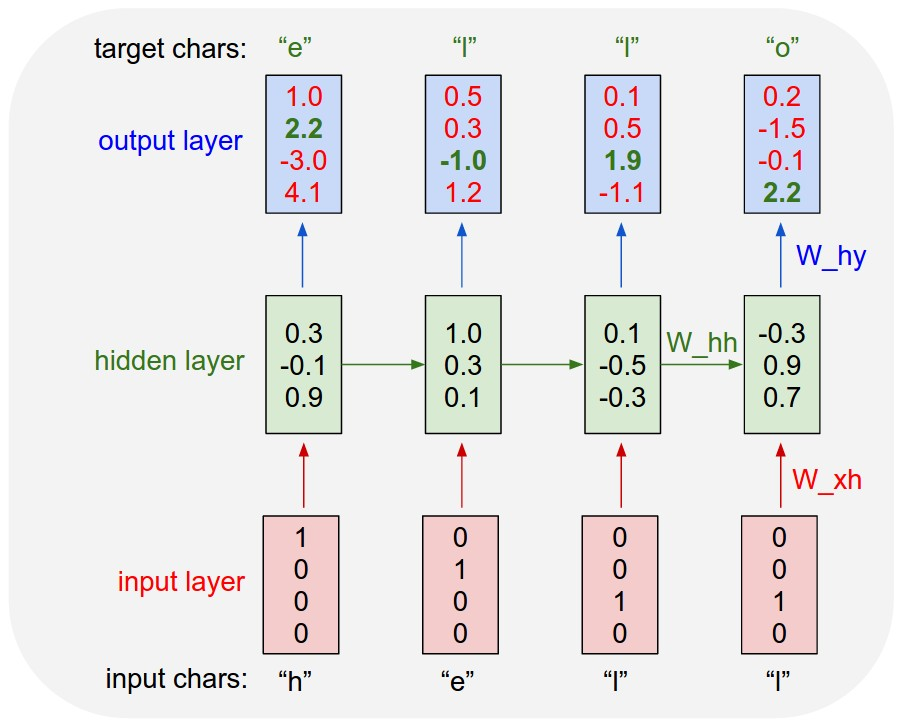
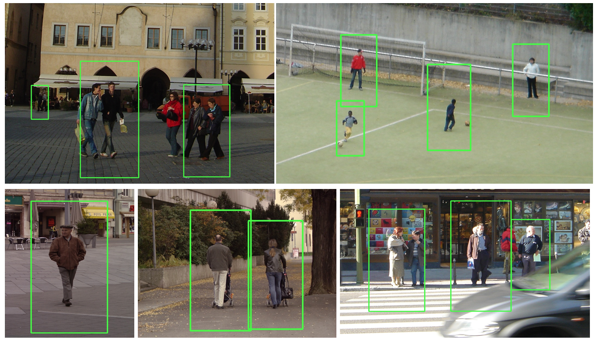
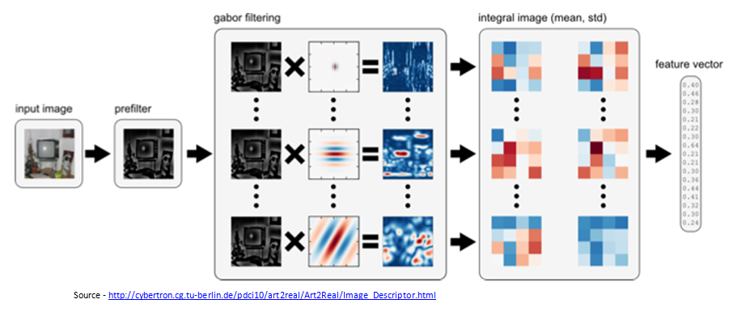
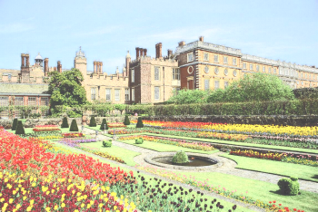
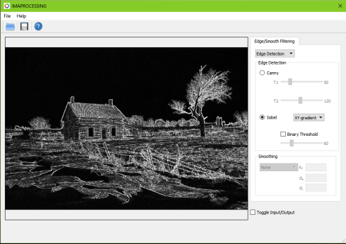

|
My current research is focussed on applying Deep Learning to Visual
Recognition problems and also improving different components
of Visual SLAM (Simultaneous Localization And Mapping) algorithm by
adding semantic information of the Scene to enhance user experience in
AR applications.
Previously, I have worked on developing deep learning models for classification, recognition and segmentation problems. I was also involved in design and development of image processing & computer vision algorithms with hands on C-level and multi-threaded optimisation of image processing modules. |
| 2017 - Present |
Deep Learning Research Engineer, WhodatTM
Research & Development Team |
| 2016 - 2017 |
Technical Lead, Samsung R&D India
Media Analytics & Recognition Team |
| 2014 - 2016 |
Lead Engineer, Samsung R&D India Audio, Video & Imaging Solutions Team |
| 2012 - 2014 |
Senior Software Engineer, Samsung R&D India
Multimedia Solutions Team |
| 2010 - 2012 |
Masters in Signal Processing
(5.8/7.0)
Thesis: Complex Network Approach for Analysis of Biomedical signals (ECG, EEG) Indian Institute of Science, Bangalore |
| 2005 - 2009 |
Bachelors in Electronic and Communication Engineering
Sri Jayachamarajendra College of Engineering, Mysore |
| Languages |
C, C++, Matlab, Python |
| Deep Learning Frameworks |
Caffe, TensorFlow |
| OS |
Linux, Windows |
| Miscellaneous Productivity Tools |
Vim, LaTex, Tmux, Visual Studio, Eclipse, Android NDK |
 |
GOTURN: Generic Object Tracking Using Regression Networks [code] |
|  |
Character Prediction using RNN & LSTM (using numpy library) [code-rnn] [code-lstm] |
|  |
Pedestrian Detection using Histogram of Oriented Gradients (HOG) [project page] [code] |
|  |
Global Image Descriptor (GIST) [project page] [code] [executable] |
|  |
Color Pencil Sketch [project page] [code] [video] [software] |
|  |
Basic Computer Vision Toolbox [project page] [video] [software] |
 Nrupatunga
Nrupatunga